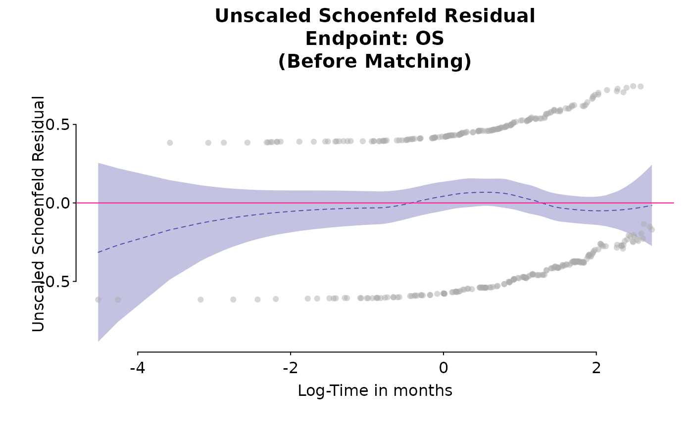

PH Diagnosis Plot of Schoenfeld residuals for a Cox model fit
Source:R/plot_km.R
ph_diagplot_schoenfeld.RdPH Diagnosis Plot of Schoenfeld residuals for a Cox model fit
Usage
ph_diagplot_schoenfeld(
coxobj,
time_scale = "months",
log_time = TRUE,
endpoint_name = "",
subtitle = ""
)Arguments
- coxobj
object returned from
coxph- time_scale
a character string, 'years', 'months', 'weeks' or 'days', time unit of median survival time
- log_time
logical, TRUE (default) or FALSE
- endpoint_name
a character string, name of the endpoint
- subtitle
a character string, subtitle of the plot
Examples
library(survival)
data(adtte_sat)
data(pseudo_ipd_sat)
combined_data <- rbind(adtte_sat[, c("TIME", "EVENT", "ARM")], pseudo_ipd_sat)
unweighted_cox <- coxph(Surv(TIME, EVENT == 1) ~ ARM, data = combined_data)
ph_diagplot_schoenfeld(unweighted_cox,
time_scale = "month", log_time = TRUE,
endpoint_name = "OS", subtitle = "(Before Matching)"
)
